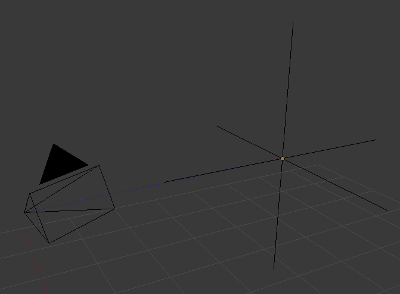

Empties¶
The “Empty” is a single coordinate point with no additional geometry. Because an Empty has no volume and surface, it cannot be rendered. Still it can be used as a handle for many purposes.
Editing¶
An Empty can only be edited in Object Mode, which includes its transformation and parenting properties.
Properties¶

Empty Draw Types.
- Display
- Plain Axes
- Draws as six lines, initially with one pointing in each of the +X, -X, +Y, -Y, +Z, and -Z axis directions.
- Arrows
- Draws as arrows, initially pointing in the positive X, Y, and Z axis directions, each with a label.
- Single Arrow
- Draws as a single arrow, initially pointing in the +Z axis direction.
- Circle
- Draws as a circle initially in the XZ plane.
- Cube
- Draws as a cube, initially aligned to the XYZ axes.
- Sphere
- Draws as an implied sphere defined by three circles. Initially, the circles are aligned, one each, to the X, Y, and Z axes.
- Cone
- Draws as a cone, initially pointing in the +Y axis direction.
- Image
Empties can display images. This can be used to create reference images, including blueprints or character sheets to model from, instead of using background images. The image is displayed regardless of the 3D display mode. The settings are the same as in Background Image Settings
注解
While alpha-images can be used, there is a known limitation with object draw order, where alphas will not always draw on top of other objects when unselected.
- Size
- Controls the size of the empties visualization. This does not change its scale, but functions as an offset.
Usage¶
Empties can serve as transform handles. Some examples of ways to use them include:
Parent object for a group of objects
An Empty can be parented to any number of other objects. This gives the user the ability to control a group of objects easily, and without affecting a render.
Target for constraints
An empty can also be used as a target for normal, or bone constraints. This gives the user far more control; for instance, a rig can easily be set up to enable a camera to point towards an empty using the Track to constraint.
Array offset
An empty can be used to offset an array modifier, meaning complex deformations can be achieved by only moving a single object.

An example of an empty being used to control an array. |

An example of an empty being used to control the track to constraint. |
{kind=link}
Other common uses:
- Placeholders
- Rigging controls
- DOF distances
- Reference Images